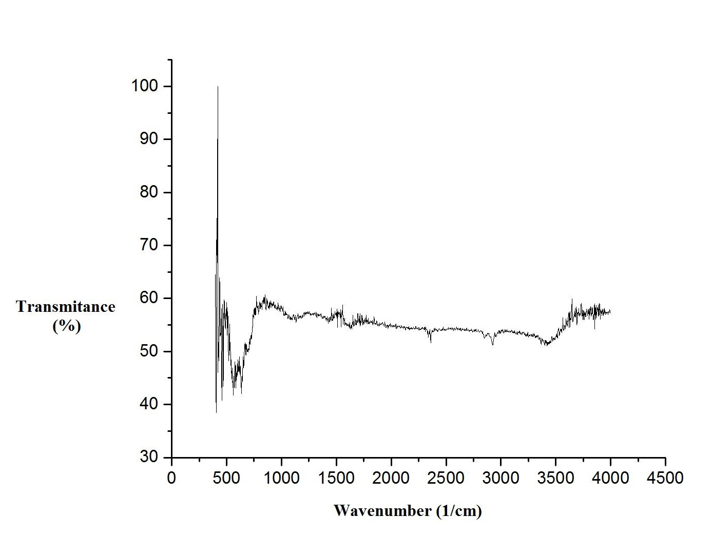

Iron Oxide Nanoparticles (IONPs) were used to give magnetic properties to the device. In order to bind them to our device, the alkoxysilane APTES was used to functionalize the IONPs. The IONPs were observed in TEM to perceive their characteristics, such as their structure, size and composition. Micrographs of coated and uncoated IONPs were obtained in order to find those characteristics.
Image 9 shows a micrograph where various uncoated NPs can be observed. It was possible to distinguish elliptical and circular structures that range from 2nm to 50nm in diameter.

Image 9. Normal view (A) and close up (B) of micrograph in TEM of uncoated IONPs.
Image 10 shows a micrograph where various coated IONPs with APTES can be observed. These were seen in TEM in order to prove their functionalization. It is possible to perceive a thin coat of, presumably, the alkoxysilane APTES in the functionalized IONPs. Notice how the uncoated IONPs in Image 9 do not show this coat.

Image 10. Normal view (C) and close up (D) of micrograph in TEM of cotead IONPs with APTES.
Surface modification by alkoxysilane is a complex process since several experimental parameters influence the system at this scale. The microestructrual analysis by FTIR (Fourier transform infrared spectroscopy) was carried out for the IONPs before and after functionalization (Image 11 and Image 12). As it was expected, the characteristic absorption bands of the Fe-O bond of the coated IONPs (Image 12) were not shifted to higher wavenumbers compared to the uncoated IONPs. However, their transmittance values decreased compared to the results obtained from the uncoated IONPs (Image 11). Both samples (Image 11 and Image 12) showed a similar bending vibration for Si-O and silanol (Si-O-H), corresponding to wave number values below 1000 cm^(-1). The intense band below 1000 cm-1 is associted to the Fe-O vibrations.
Image 11. FTIR spectrum of a sample of uncoated Iron Oxide NPs.
The presence of amino groups associated with alkoxysilane APTES was observed. The broad bands surrounding 1500 cm^(-1) (Image 12) can be ascribed to the N-H stretching vibration, which is indicative of a free amino group. On the other hand, the transmittance values in Image 12 showed a considerable decrement for values of wavenumber greater than 3000 cm^(-1). These values could correspond to the N-H asymmetric stretching of the amine H-bonds, thus, indicating a possible NH2 interaction toward the NP.
Image 12. FTIR spectrum of a sample Iron Oxide NPs coated with APTES.
After measuring the Zeta potential of a sample with uncoated IONPs (Graph 4) and another with coated IONPs (Graph 5), it was observed that the uncoated IONPs showed a peak around the 0 mV. On the other hand, the coated NPs sample showed several populations with different mV peaks. In Graph 5 there are three different repetitions of the Zeta potential measurement: one of them shows several populations with negative mV and one big population with positive mV values. The other repetitions also shows populations with positive values of mV indicating an obvious evidence of the functionalization in the IONPs.
Graph 4. Distribution of Iron Oxide NPs.
Graph 5. Distribution of coated Iron Oxide NPs with APTES.
After the successful functionalization of the Iron Oxide NPs, we decided to assemble the complete device by mixing the NPs with the DNA Origami structure. The reaction was characterized in AFM and the results are shown in Image 13. Unfortunately, we don't have a clear evidence of the DNA box and the cotaed IONP interacting with each other. However, it is important to remark the similitude of the observed elements, although we didn't found any hollow structure.
Image 13. AFM micrograph of the device assemble reaction.
NOTE: The folding reactions were performed at a very low concentration of scaffolds, therefore it was difficult to see clear bands in the electrophoresis gels. For that reason, we decided not to show any gel because they didn't show consistent results to be discussed.